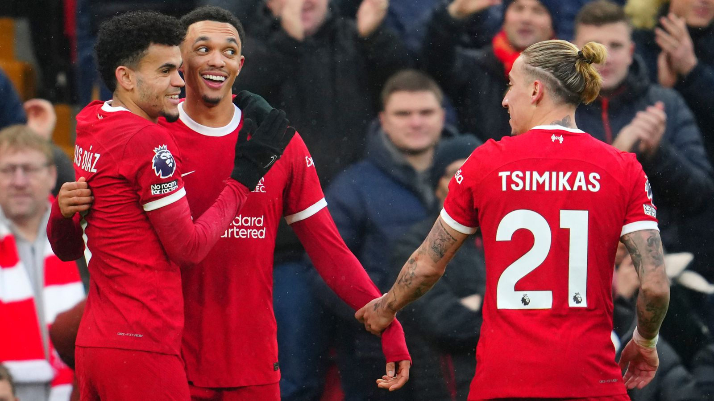

Analysis of the Premier League competition with Man City, Liverpool, and Arsenal fighting for first place.
Liverpool, Arsenal, and Man City are separated by just a few points in the Premier League standings, with Man City facing the most difficult league finish.

Their offensive prowess has propelled them to the summit of the table and could potentially maintain their position there. Even in the absence of Mo Salah, they have netted an impressive 12 goals in the last four Premier League matches, highlighting the depth of their squad. With Salah nearing a return to full fitness, their attacking options are set to be further bolstered.
Encouragement can also be found at the defensive end, where Virgil van Dijk has shown signs of returning to his previous peak form. Additionally, Alisson continues to assert his status as the Premier League's premier goalkeeper, while Andrew Robertson's return from injury after a four-month absence further strengthens their defensive line.
The revelation of Jurgen Klopp's impending departure at the end of the season could potentially provide an additional boost to their prospects. The heightened emotional atmosphere at Anfield, coupled with Klopp's farewell, could galvanize the team and energize the fans. Notably, Manchester City's upcoming visit to Anfield carries added significance, given their historically poor record at the venue under Pep Guardiola.
Despite their recent dominance, Manchester City have struggled at Anfield, having managed just one victory in their last seven Premier League visits there - a match that took place behind closed doors during the 2020/21 season. With the return of fans and the emotional backdrop of Klopp's departure, Liverpool will be hopeful of maintaining their home advantage and securing a crucial result against their title rivals.
Klopp has made significant improvements to Liverpool's midfield, essentially rebuilding it from the ground up following the exits of key players like Jordan Henderson, Fabinho, James Milner, and Naby Keita last summer. However, they still lack a defensive midfielder of the caliber of Rodri or Declan Rice to anchor their midfield effectively.
The recent injury setback to Thiago Alcantara further limits their choices in midfield, exacerbating the situation. Despite Van Dijk's impressive performances, doubts persist in the defensive line, especially with Joel Matip sidelined, leaving them heavily reliant on Ibrahima Konate, who has shown promise but has also struggled with injuries at times.
 For Manchester CityGuardiola's squad is well-versed in the requirements for securing victory as they pursue an unprecedented fourth consecutive title win. They have successfully rebounded from more challenging circumstances than those encountered earlier this season.
Their depth of talent is unparalleled, enabling them to maintain momentum even in the absence of players like Kevin De Bruyne and Erling Haaland. With the return of these key players and a clean bill of health, a sense of inevitability surrounds their future prospects.
Now that De Bruyne and Haaland have returned to the fold, and the team is free of injuries, there is a growing sense of certainty regarding what lies ahead for Guardiola's side.
Manchester City's unprecedented feat of winning four consecutive titles stands as the main testament to their dominance. Yet, amidst fierce competition from Liverpool and Arsenal, and the logistical challenge of managing multiple competitions concurrently, the question arises: can they uphold the standard necessary for a fourth successive season? The rarity of this achievement underscores its formidable difficulty.
Adding to the challenge for their competitors is Manchester City's perceived defensive vulnerability compared to previous seasons. Despite their potent attacking force, they've shown susceptibility at the back, conceding 25 goals in 23 games – their highest rate under Guardiola's leadership. This defensive fragility contrasts starkly with their earlier campaigns, including their third-place finish in the 2016/17 season.
Further complicating matters is City's tendency to concede goals from their opponent's first shot on target. This recurrent vulnerability poses a significant challenge, especially with a demanding fixture list ahead. Matches against strong opponents such as Manchester United, Liverpool, Brighton, Arsenal, and Aston Villa in consecutive games starting from March will undoubtedly scrutinize their defensive capabilities and determine their title aspirations.
 For Arsenal
For Arsenal
Arsenal, often perceived as the least likely among the three contenders, seem to defy expectations this season. Titles are typically secured by teams with robust defensive capabilities, an area where the Gunners excel. Their exceptionally low expected goals against total of just 18.05 sets them apart, showcasing their adeptness at stifling opposition chances.
Initially, Arsenal struggled to match their defensive solidity with attacking prowess in the early stages of the campaign. However, recent developments suggest a shift in momentum. With an impressive tally of 16 goals scored in their last four matches, the Gunners seem to have found their cutting edge. Could this be a sign of a newfound offensive potency?
The recent goal-scoring spree prompts speculation: have the floodgates finally opened for Arsenal? As they continue to combine defensive resilience with newfound attacking flair, they emerge as serious contenders, challenging conventional wisdom and raising hopes of a successful title campaign.
Last season's collapse continues to loom large over Arsenal. The memory of relinquishing a substantial lead to City, at a time when victory seemed within grasp, casts doubts on their ability to endure pressure. Compared to their competitors, this squad lacks the same wealth of experience in winning trophies, adding to the weight of expectation.
Despite Arsenal's recent offensive resurgence, concerns persist, particularly regarding the role of the No 9 position. While Jesus brings many attributes to the team, prolific scoring isn't among them. The absence of a clinical striker with a killer instinct may still prove to be a hindrance.
In contrast to Liverpool, who managed to salvage a draw during their visit, Arsenal faces a daunting challenge at the Etihad Stadium. The team has historically struggled at this venue, making their upcoming fixture a critical test. Given the narrow margins in the title race, a defeat here could inflict significant harm on their aspirations.
Their ability to sustain momentum and overcome past setbacks will be closely scrutinized, especially considering the high stakes involved in the title race. Arsenal must demonstrate resilience and resolve to dispel doubts surrounding their staying power.
As the season progresses, each match becomes increasingly pivotal. With the race for the title intensifying, Arsenal must navigate through challenging fixtures and maintain consistency to remain in contention for top honors.